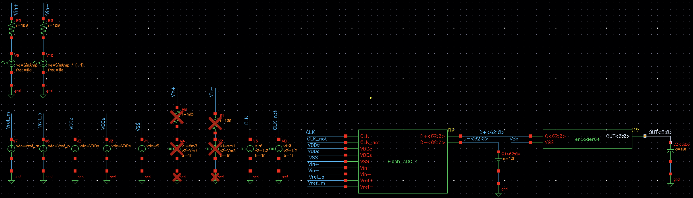
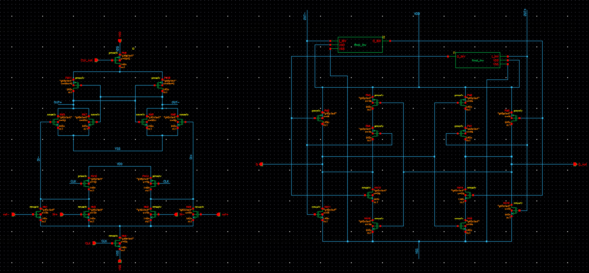
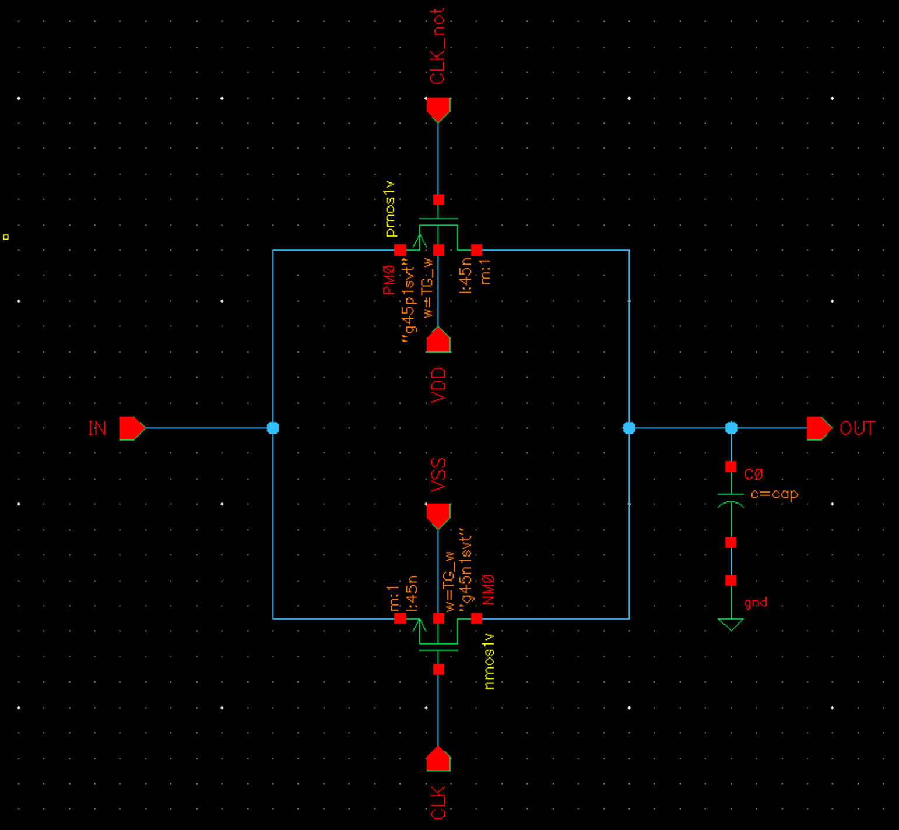
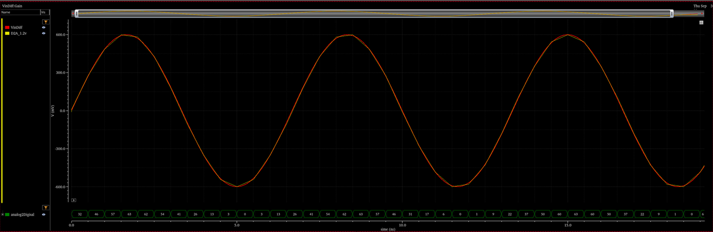
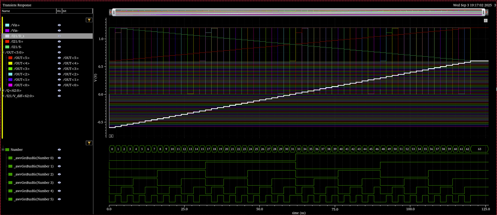
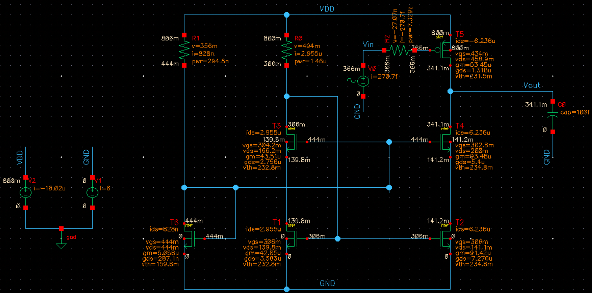
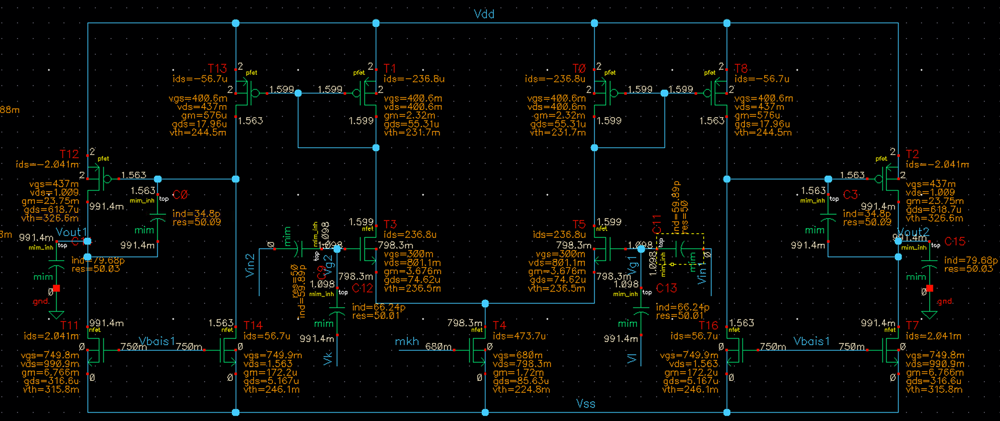
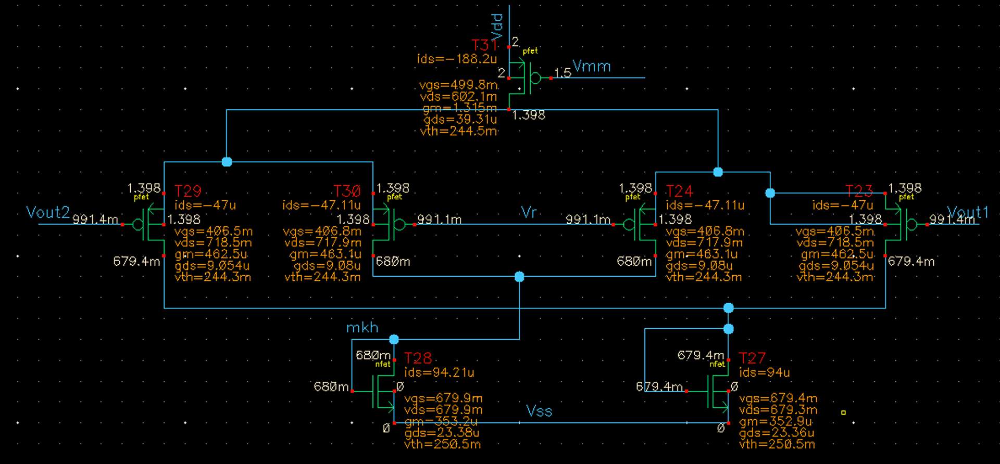
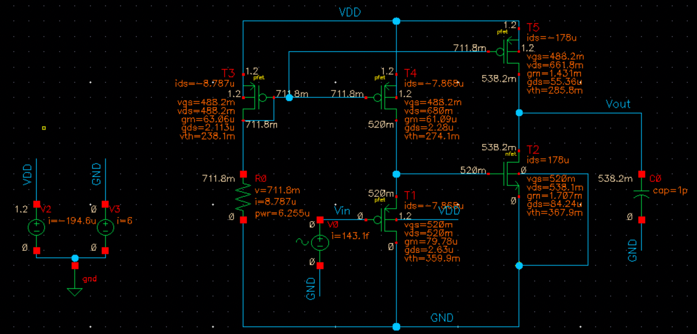
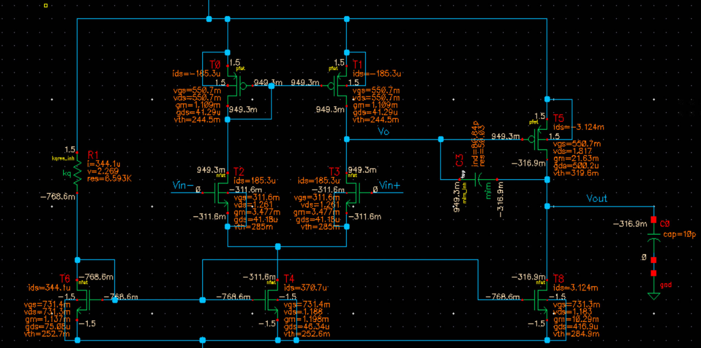

Work · course projects
Mixed-signal and analog IC design
Transistor-level projects in Cadence Virtuoso from the M.Sc. courses, each carried from specification to characterisation.
Mixed-Signal Circuits · Virtuoso
6-bit 2 GHz differential flash ADC
A fully differential flash converter: a transmission-gate sampling network, a resistor ladder for the references, 63 high-speed comparators and a recursive encoder that turns the thermometer code into six bits.
Functional verification confirmed correct conversion across the full differential input range at multi-GHz sampling. The design was then characterised for linearity through DNL and INL, for dynamic performance through FFT-based SNDR and ENOB, and for power, with the trade-off between speed, accuracy and comparator count made explicit.





Integrated Analog IC Design · Spectre
Fully differential high-speed OTA
From single-stage amplifiers for a Wi-Fi baseband and for low-power sensors up to a fully differential high-performance amplifier.
The advanced stages built a high-speed operational transconductance amplifier with small-signal and large-signal analysis, impedance evaluation and noise simulation, then added common-mode feedback, bias networks and compensation. The final amplifier was characterised for gain, bandwidth, CMRR, noise and dynamic range.





Introduction to VLSI
4-bit ALU through a full VLSI flow
Logic, timing, area and power considered together from RTL to layout; the project that led to the full-chip flow of the thesis.